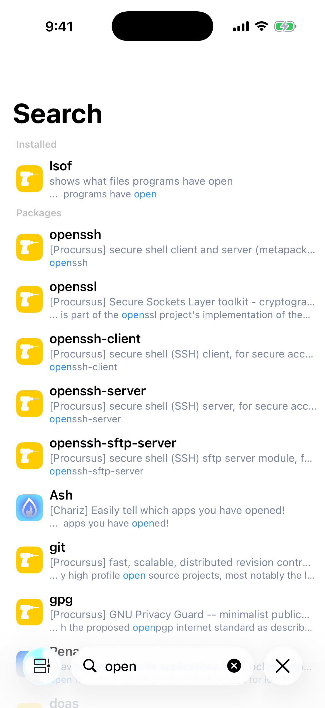
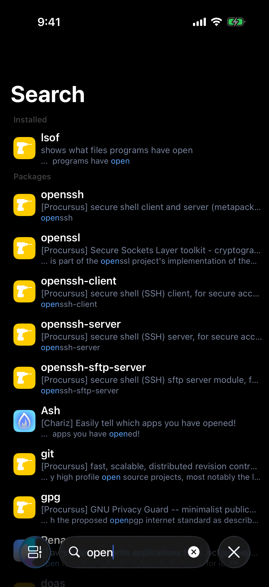
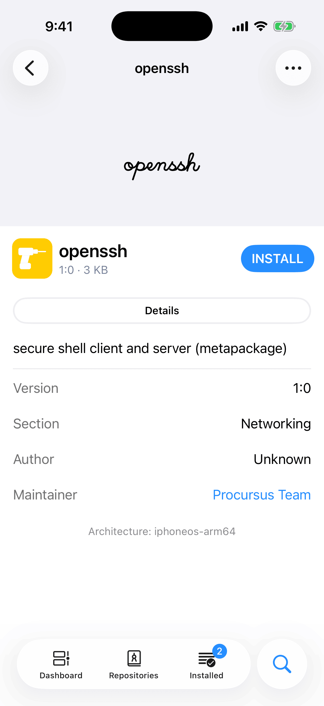
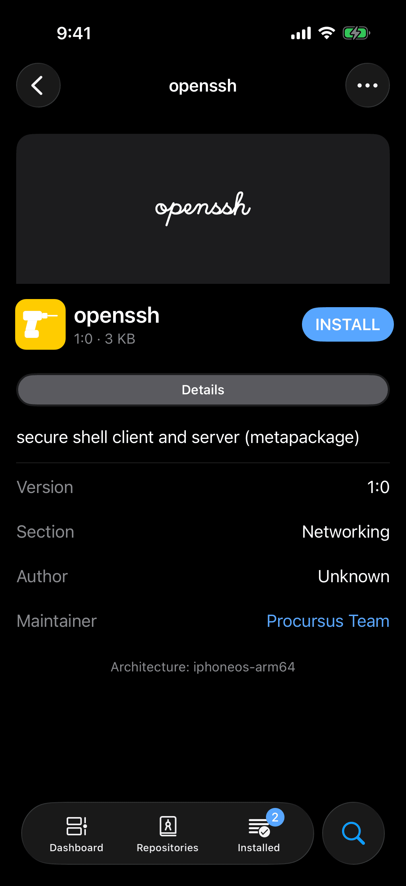
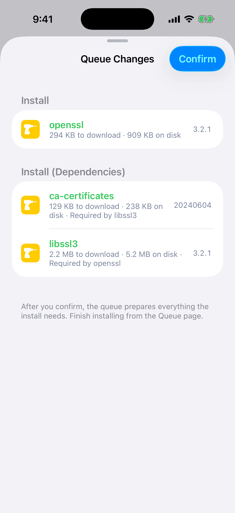
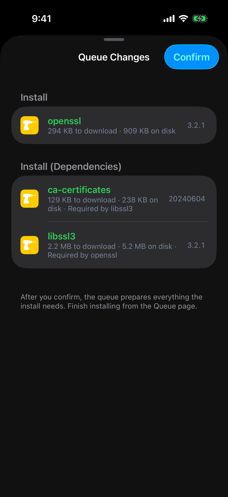
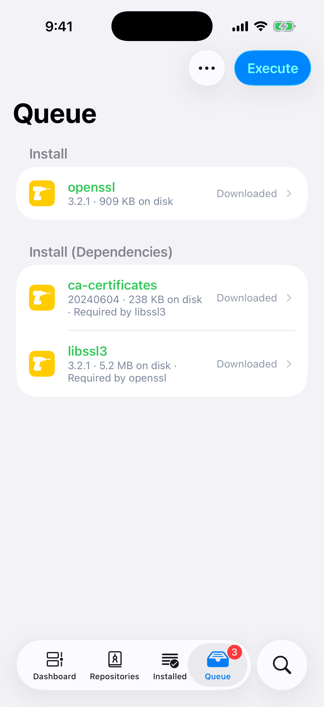
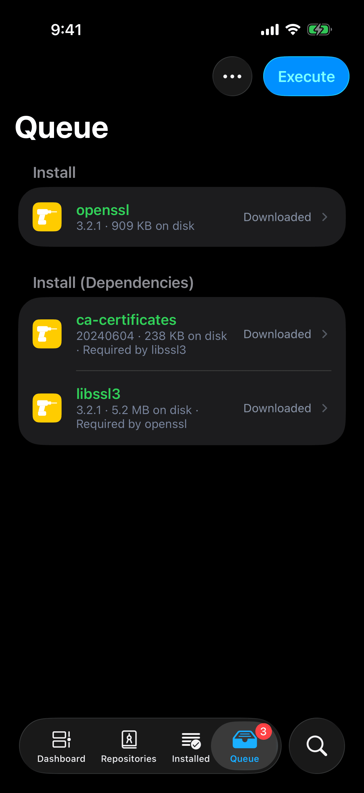

After this chapter you can find a package, install it or remove it, and know that nothing on your device changes until you tap Execute. Every request you make, from any page, first becomes a change you review and then waits in the queue. Removing, updating, and downgrading a package follow the same path as installing one.
Search
Open the Search tab. Before you type, the page is empty and says Search packages, repositories and authors.
Results arrive as you type, in up to four groups, always in this order: Installed, Packages, Repositories, and Authors. A group with no match is not shown. Installed holds what is already on your device, and Packages holds what your repositories offer.
A package matches when your text appears anywhere in its name, author, section, description, or identifier. Packages whose name or identifier starts with your text come first, and among those the shorter names lead. The second line of a row is the package's description, preceded by its repository's name in brackets. The third line shows where your text matched, with the match highlighted. A paid package's name is tinted. A repository matches on its address, its name, or its description.


Tap a package to open its page, a repository to open that repository, and an author's row, marked Packages by this author, to list that author's packages by name. Touch and hold a package row to preview its page and open its menu, the same one described under The Package Menu. Repository and author rows have no menu.
When nothing matches, one row says No results found and Try a different search or refresh your repositories. A package marked No longer available in this repository is one Irisin remembers from before its repository stopped offering it.
You can also add a repository from here. Type an address that begins with http and leave the search field, and Irisin offers to add it as a repository, unless you have added it already. See Add a Repository.
A Package's Page
A package's page opens with its artwork. Below that is a banner with the package's icon, its name, its version and download size, and one button. The description the repository publishes follows. The last line of the page names what the package was built for, such as Architecture: iphoneos-arm64.
The button names the next thing you can do with this package. Most of its labels are shown in capitals.
| Button | When You See It | What a Tap Does |
|---|---|---|
| Install or Buy | The package is not installed. A paid package reads Buy. | Asks to install it. |
| Update | The package is installed and this page shows a newer version. | Asks to update it. |
| Actions | The package is installed and there is nothing quick to do. | Opens the menu. |
| Open Queue | The package is already in the queue. | Opens the queue. |
| Replace | The package is in the queue as a different version from the one on this page. | Asks to queue this version in its place. |
| Unsupported | The package is not built for this device. | Queues nothing, and explains why. |
The explanation behind Unsupported is titled Unsupported Architecture and reads, for example, This package is built for iphoneos-arm64. This device uses iphoneos-arm64e. Choose a compatible package. On roothide, a rootless package is not unsupported: see Compatibility Mode.


A tap never installs. It opens the Queue Changes sheet, which shows what the request would do and waits for you to confirm. See The Queue.
When you open a page from Installed, Irisin shows the repository's record for that package where there is one: the newest update on offer, or else the repository it was installed from. That is why the page can offer Update or Reinstall for something already on your device.
Open a .deb File
- In Files, open a
.debwith Irisin. Irisin works on a copy. Your file stays where it is. - Wait while Irisin shows Unpacking Package…
- The package's page opens. Its button reads Install and its menu offers Direct Install. Either goes through the same Queue Changes sheet as any other request.
If the file cannot be read as a package, Irisin says This package could not be verified. Choose a different file and try again.
Choose Version
- Open the package's menu and choose Choose Version.
- A sheet lists every version on offer, one group per repository. The version the page is showing has a checkmark. Cancel closes the sheet with nothing changed.
- Tap a version. The sheet closes and the page shows that version. If you opened the menu from a row in a list, the version opens on a page of its own.
- Now use the page's button or menu to ask for it.
Choosing a version queues nothing. It only changes which version the page, its button, and its menu refer to.
A version older than the installed one shows Downgrade in the menu, in red. The sheet lists only versions a repository still offers, so an older version that every repository has dropped cannot be chosen here.
When the page is showing a .deb you opened, or a package that only your device has a record of, the sheet adds the header Current Selection: Local Version above the repositories, and no version has a checkmark.
After a downgrade, the newer version is an update again. To keep the older one, see Block an Update.
Download Archive
This saves a package's .deb file without installing it.
- Open the package's menu, then Advanced, then Download Archive.
- A card appears over the page with the package's name, a progress bar, and a status line that reads Preparing…, then Downloading…, then Verifying… Under the bar, a count such as 1.2 MB of 3.4 MB shows how much has arrived. A file Irisin has already downloaded finishes at once.
- The share sheet opens with the file, named
<identifier>_<version>_<architecture>.deb. Save it or send it from there.
For a paid package, Irisin checks your purchase first, and the card opens on Checking Purchase… If you are not signed in to the repository that sells it, sign-in starts instead and nothing is downloaded. Cancel on the card stops the download and closes it. If the download fails, the card closes and Irisin reports Download Failed with The download was interrupted.
Download Archive is offered only for a repository's package that has a download. A .deb you opened is already a file, so its menu does not have the item.
The Queue
Every request you make, whether to install, update, downgrade, reinstall, or remove, goes through one sheet. What you confirm there waits in the queue until you run it.
- Installon the package's page
- Confirmthe Queue Changes sheet
- Queuethe tab or floating bar
- Executethe queue's one buttonor Patch first
- Installingthe operation pageCompleted
The downloads start at Confirm and run while the queue waits.
The Queue Changes Sheet
The sheet is titled Queue Changes. It lists what your request would do, in groups, in this order: Install, Update, Downgrade, Remove, Reinstall. Within each kind, what you asked for comes first. What the plan brings along follows in a group of its own, such as Install (Dependencies).
A row shows the package's name and, at its right edge, the version: 1.1 for an install or a reinstall, 1.0 → 1.1 for an update or a downgrade, and the installed version for a removal. Under the name it says how much is left to download (2.1 MB to download, left out when the file is already on your device), how much room it takes (6.4 MB on disk), and, for a package you did not ask for, why it is there: Required by OpenSSH. A removal's name is red and struck through. A new install's name is green.


No Longer Needed appears when the plan removes something and leaves behind dependencies that nothing else needs. Each has a checkbox, and none is checked, so they stay installed unless you say otherwise. Check one to remove it too, and the sheet works out the plan again. A grayed row cannot be checked yet: something you left unchecked still needs it, and the row names it.
No Longer Queued lists, grayed, what this change takes back out of the queue.
When the change adds anything, the sheet's footer says After you confirm, the queue prepares everything the install needs. Finish installing from the Queue page. Tap Confirm to add exactly what the sheet shows. The sheet closes, a banner reports Added to Queue, and you stay on the page you were on. Confirm does not open the queue and installs nothing. To leave without changing anything, pull the sheet down. It has no cancel button.
Open Queue takes the place of Confirm when the change alters nothing. The sheet then holds one row, Already in the queue or No changes.
If the change cannot be planned, there is no list. The sheet is a report titled Unable to Prepare Installation. See When a Plan Cannot Be Made.
On roothide, when the change installs a rootless package, Confirm first asks under the title Compatibility Mode, with Install Anyway and Cancel. The sheet's footer warns that the queue may change when the package is patched. See The Warning.
The Floating Bar
While there is a queue, a bar reading Packages in Queue: 3 floats at the bottom of every page except the queue's own, clear of the tab bar. The number counts the packages the queue installs plus the ones it removes. Tap the bar to open the queue. The Queue tab is there while there is a queue, and carries the same number as its badge.
The Queue Page
Open the queue from the Queue tab or the floating bar. The page reads like the sheet: the same groups, requests ahead of their dependencies, versions and sizes on each row. Downloads start the moment you confirm, whether or not this page is open. Each row fills with tint from its leading edge as its file arrives. Its right edge shows a spinner, then a percentage, then Downloaded, or Failed in red. Removals and .deb files you opened have nothing to download and show nothing there.


Notices appear at the end of the list. OpenSSH: kept at the current version by another package or a blocked update. names an update the plan could not take. Irisin will restart when this finishes. appears when the queue updates Irisin itself.
To take one package out, swipe its row left and tap Remove from Queue. This goes through the same sheet, and removing a dependency also takes out the packages that need it. The … menu has two items. Export All Packages shares the downloaded files. It is grayed with Available once the downloads finish. while a file is missing, or The queue installs nothing. when there is nothing to export. Clear Queue empties the queue and cancels its downloads.
A red row at the top of the list means the packages on your device changed, so the queue can no longer be planned as it stands. The row gives the reason. The action button is disabled until you change the queue, by taking a package out of it or clearing it.
Patch and Execute
The Queue page has one action button in its bar, and its label tells you what is next.
- Execute runs the queue.
- Patch appears in its place, on roothide, while a rootless package in the queue still has to be converted.
- Retry appears after a download failed or the queue could not be prepared.
You do not have to wait for the downloads. Tap the button before they finish and it runs when the last file arrives. A spinner takes the button's place while Irisin works.
Patch converts the packages and may change the queue. When it does, an alert titled Queue Changed says what left and what joined, and the button reads Execute from then on. See Patch Before Execute.
Execute opens the operation page, titled Installing, full screen on iPhone. When the title becomes Completed, the queue is cleared. The floating bar goes away, and so does the Queue tab once you leave it. After a failure the queue stays, planned again against what the run left on your device, so you can run what remains. For a run that ends on Failed, see Read the Operation Page.
Three messages can stop the button before anything runs.
- Another operation is already running. Wait for it to finish, then try again. Only one operation runs at a time.
- Unable to prepare this operation. Try again. The button becomes Retry, which prepares the queue again.
- The download was interrupted. A failed download shows its reason as a red row, and Retry downloads again. For a purchased package the row adds A purchased package's download link expires. Remove it from the queue and add it again.
A Queued Package's Details
Before you run the queue, you can read what each package will do to your device. A row on the Queue page opens once there is something to read: a removal at any time, anything else once its file is downloaded. A chevron at the row's right edge tells you it opens.
The page is titled with the package's name and has two sections. Files has three rows, each with a count: New Files, Replaced Files, and Deleted Files. Tap a count above zero to read the paths. Replaced Files is tinted when it is above zero: look there first, because those are files already on your device that this package overwrites. When some of them belong to other installed packages, a line under the section names them: 2 of the replaced files belong to OpenSSH.
Scripts lists the package's scripts in the order they will run. Each is marked Installed, for a script of the version on your device, or Incoming, for one the new file brings. Tap a script to read it. One that is not text is marked as binary and does not open. The section's footer reads The scripts run as root, in this order. A package with none says No scripts.
This page is read-only. Nothing on it changes the queue, and you can run the queue without opening it. While Irisin reads the file, one row says Reading the package… If it cannot, a red row says Unable to read this package.
The Installed Page
The Installed tab lists what is on your device. Under the list, a line such as Packages: 212 · Sections: 14 counts what is shown after your search and filter.
Swipe a row left for buttons that show a symbol and no name. They stand for whichever of Remove from Queue, Remove, Update, and Reinstall apply to that package, in that order from the edge. Each asks for the same thing as the matching menu item, and a long swipe alone asks for nothing. A window wide enough to show the packages in columns has no swipe buttons. Touch and hold a row for the full menu, in that layout and in every list. Tap it for the package's page.
The … menu holds the rest.
- Refresh reads again what is installed, not your repositories, and confirms with Installed packages refreshed. Pulling the list down does the same.
- Select starts a selection, described below.
- Block All Updates, in red, is there only while an update is found. See Block an Update.
- Export Package List and Export dpkg Status share a record of what is installed. See The Menu and Exports.
- Filter narrows the list by Section or by Author.
- Sort By orders it by Name or by Last Modified, Ascending or Descending.
To act on several packages at once:
- Open the … menu and choose Select.
- Check the rows you want.
- Tap Remove or Update in the bar. One Queue Changes sheet covers the whole selection.
Among several selected rows, one that is already in the queue is left out of a removal. Take it out of the queue first. A paid package is left out of an update, because its purchase is checked from its own page. When a batch leaves something out, Irisin says Some Packages Left Out and Open their pages instead.
When an update is found, the bar shows an up arrow, which opens Updates. Otherwise it shows a green checkmark, and a tap on it reports All packages are up to date. See Updates.
If the wrong package is installed, Remove it here. If it is the right package in the wrong version, open its page, use Choose Version, pick the one you want, and then choose Downgrade. A package the system requires cannot be removed unless Power Operations is on. See Power Operations.